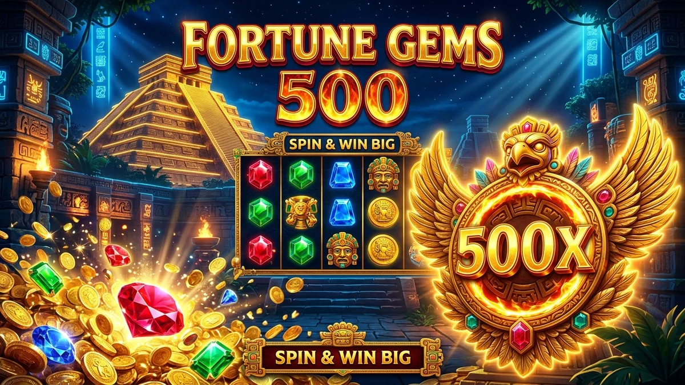

Fortune Gems 500 en Mexboss se ha posicionado como una de las máquinas tragamonedas más populares y lucrativas del momento en México. Desarrollado por el prestigioso estudio TaDa Gaming, este título combina una atmósfera mística inspirada en los tesoros ancestrales con una mecánica moderna basada en un cuarto carrete multiplicador capaz de alcanzar un asombroso 500x.
En este artículo exhaustivo, analizaremos la ficha técnica de la tragamonedas Fortune Gems 500, desglosaremos el valor de cada gema sagrada y te brindaremos los mejores trucos para optimizar tu presupuesto, aprovechar los giros gratis de Mexboss y maximizar tus probabilidades de éxito con retiros rápidos en pesos mexicanos (MXN).
A diferencia de los slots tradicionales de frutas, la estructura de Fortune Gems 500 en Mexboss destaca por su dinamismo. Cuenta con una cuadrícula clásica de 3 rodillos y 3 filas (3x3), acompañada de un exclusivo cuarto carrete dedicado exclusivamente a multiplicadores.
Cada vez que consigues una combinación ganadora en una de las 5 líneas de pago, el símbolo que aterrice en el carrete especial multiplicará instantáneamente el valor de tu premio. Los multiplicadores disponibles en el juego base varían entre 1x, 2x, 3x, 5x, 10x, 15x y el épico multiplicador 500x.
Además, el juego incorpora el símbolo del Garuda Wild, una deidad mística que sustituye a cualquier gema ordinaria para completar líneas victoriosas con los pagos más elevados de la tabla.
Para dominar las partidas en Fortune Gems 500 en Mexboss, es fundamental conocer el valor de cada figura:
Si buscas sacar el mayor provecho en Fortune Gems 500 en Mexboss, te recomendamos aplicar estas 4 estrategias probadas por jugadores expertos:
Jugar a Fortune Gems 500 en Mexboss garantiza total transparencia y juego limpio. Todos los títulos de TaDa Gaming están equipados con un Generador de Números Aleatorios (RNG) certificado por laboratorios internacionales independientes como BMM Testlabs y GLI.
Mexboss opera conforme a las normativas de entretenimiento digital en México, promoviendo el juego responsable en estricto cumplimiento con las directrices de la Secretaría de Gobernación (SEGOB) para mayores de 18 años (+18).
Cuando consigas una gran victoria con el multiplicador 500x, podrás transferir tus ganancias directamente a tu cuenta bancaria de BBVA, Banorte, Santander o Nu a través de nuestro sistema de retiros rápidos SPEI en cuestión de minutos.
El multiplicador más alto es de 500 veces el valor de la línea ganadora, el cual aparece en el cuarto carrete especial durante los giros de alta intensidad.
Sí, la interfaz está 100% optimizada para dispositivos móviles Android e iOS. Puedes ingresar directamente desde el navegador o mediante nuestra aplicación oficial disponible en descargar app Mexboss.
Solo necesitas completar tu registro en menos de 2 minutos siguiendo nuestra guía de cómo registrarse en Mexboss, realizar tu primer depósito vía SPEI u OXXO y buscar el juego en el lobby de tragamonedas.